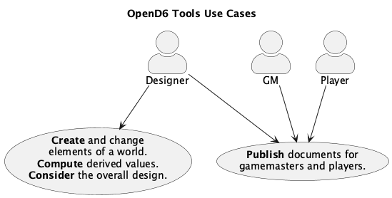

Architecture¶
These tools define Domain Specific Languages (DSLs) for some broad categories of complex TTRPG constructs, including magical spells (and miracles) as well as characters (and monsters.)
Consistent with the C4 Model, we’ll look at Context, Containers, Components, and Code. This is a summary and overview of the common features and design approach.
The details of each DSL are in separate Code sections.
Context¶
We’ve got a number of use cases for two primary audiences, a Software/DSL designer, and a Campaign designer. The campaign designer’s work product will often be shared with players and game masters; this sharing isn’t really part of this application.
Here’s a summary of the context for these tools:

The Publish documents use case is implemented as processing the publication pipeline to create HTML, PDF, or EPUB documents.
The Create and change elements use case is summarized as the Change-Compute-Consider cycle. This can include fine-tunning a spell’s difficulty; see fantasy.magic.adjusting_and_readjusting. It can also include adjusting the dice budget for characters and creatures.
This use case helps assure the rules and examples are internally consistent. Using software tools does limit the author’s flexibility, in the interest of assuring consistency.
Implicitly, there’s also a use case to be sure this implementation is correct and consistent with OpenD6 rules. This has a number of challenges, and isn’t really part of the user’s experience. It’s a technical consideration that arises when inconsistencies are found in the published rules. See Area Effect Aspect Volume Computations for an in-depth analysis of a tiny inconsistency.
The Change-Compute-Consider cycle is how a designer arrives at a spell’s details. The DSL assures the difficulty of a magical spell or invocation meets the needs of the overall rules or a specific campaign. The OpenD6 rules suggest, for example, that different religions will have distinct characteristics for invocations. This suggests some care to make sure the various religions have a balanced mix of strengths and weaknesses.
Creating unique campaign documents is a matter of authoring new documents using RST markup. This can then be converted to HTML or PDF or EPUB for publication.
Before looking at the C4 model: Context, Containers, Components, and Code, we’ll consider some non-functional requirements and how they constrain the architecture.
Non-Functional Requirements¶
These non-functional requirements are part of the design and development process. They’re not part of the final DSL. We’ll use the FURPS model: Functionality, Usability, Reliability, Performance, and Supportability. Functionality is generally described by the C4 model, including Context, Containers, Components, and Code, covered elsewhere in this document.
Usability¶
As noted in the Context section, these tools are focused on desktop publication of TTRPG rules – world books, campaign books, scenario details, etc. These software tools are not for interactive play.
The tools need to work with a document production pipeline.
More importantly, the spell definitions are plain text files that can be edited and processed by a wide variety of tools. This means the essential content can be extracted from these tools for use in other tools.
For more thoughts on usability, see Notes on DSL Design.
Reliability¶
Since the tools run on a desktop, any reliability, availability, and security questions are pushed to the desktop OS.
Performance¶
We don’t spend any time optimizing these tools for high performance. They’re run rarely. Once an author has a good design, they’ll publish it and move on to the next project.
Supportability¶
The most important question is this:
How can we be sure the DSL “works”?
We’re done defining the DSL when it can reproduce the published content. This means that we can have a suite of automated tests to create Spells, Characters, Creatures, etc. which have correct computed difficulties.
This test suite needs reflect the source documents. The published documents are difficult to parse and contain some editorial errors. Therefore, the DSL will not trivially reproduce the published results. It will reproduce those results which are clearly free of errors. For more on the source documents used to validate the DSL, see The Source Extraction Saga.
Containers¶
The tools will run on a desktop. The idea is to have Python module files with spell definitions (or character definitions.) The actors can then process these files to compute difficulty or dice budget values.
There are two general modes of operation.
The interactive Change-Compute-Consider cycle.
The final publication pipeline.
An interactive environment is required to permit the actors to fiddle around with spell aspects (or character attributes) to get the budget correct.
For interactive exploration, a tool like Jupyter Lab is ideal.
The spell can be created and tested within a lab notebook.
Later, an opend6_tools application can extract the notebook content to create the required Python module.
This will feed the document publicatiojn pipeline.
The document publication pipeline is best handled by a “static site generator” or similar tool. The Sphinx tool works well for this, since it can produce HTML, PDF, and EPUB outputs. (Other tools like Hugo or Pelican can be used. The only requirement is to consume source in RST notation.)
This leads to using four applications on the user’s desktop:
- Jupyter Lab:
This supports interactive work with spell and character definitions. It enables the Change-Compute-Consider workflow.
- Text Editor or IDE:
This is used create and modify campaign documents in RST. The source text that includes spells, characters, items, etc.
- Publication Tool:
A tool like Sphinx will produce final, published documents from the source RST. This can include HTML, EPUB, and PDF.
- The make tool:
The make tool is ideal for coordinating the various steps in publication. The Sphinx publication tool uses the make tool to determine what has changed and what need to be rebuilt. We’ll configure the make tool to use the
opend6_tools.notebook_extractapplication to create the RST files form notebooks.
The desktop computer has a number of interacting applications. The following diagram shows how the actor interacts with these components:
![@startuml
'https://plantuml.com/deployment-diagram
skinparam actorStyle awesome
title Container for the *OpenD6* tools
node desktop as "Desktop Computer" {
boundary Browser
boundary Terminal
component jupyter
component sphinx
boundary Editor
folder notebooks {
file "spell notebook" as nb <<.ipynb>>
}
folder campaign {
folder source {
file "spell module" as py <<.py>>
file "other docs" <<.rst>>
}
folder build {
file "campaign book" as book <<.html>>
}
}
component notebook_extract
notebook_extract --> nb : "consumes"
notebook_extract --> py : "creates"
jupyter --> nb : "creates"
Browser --> jupyter
sphinx --> py : "reads"
sphinx --> book : "writes"
component make
make --> sphinx : "runs"
make --> notebook_extract : "runs"
Terminal --> make
component magic2
component character
nb ..> magic2
nb ..> character
py ..> magic2
py ..> character
Editor --> "other docs"
}
actor "Campaign Designer" as gm
gm --> Browser : "**Create-Compute-Consider**"
gm --> Terminal : "**Publish**"
gm --> Editor
cloud "players and GM's" as players
book ----> players
@enduml](_images/plantuml-63c991ac8e8a3a1cf45b5e2bccce3209413f4311.png)
Viewed superficially, a number of tools are used to create a variety of source files for publication. What’s important is the use of DSL’s, defined in Python, to define spells, items, characters, and creatures. These DSL’s have an interesting collection of components that provide the required class definitions
Components¶
At the highest level, the opend6_tools components have two purposes:
Definitions of DSLs for Spells, Characters, etc. These will support the “Validates design details via Change-Compute-Consider cycle” part of the use case. They are tested by the “Reproduces published rules” use case.
Some small applications to support publication. The goal is to produce RST-formatted details for publication from the DSLs used to create, compute, consider, and change the design. This supports the “Publish campaign documents” use case.
The DSLs are used to build a Python module with a CLI. The Python module, when run as an application, creates the neede RST files. There’s little programming involved in using the DSL. The idea is to create Python objects which are static description of a Spell or Character. The Python module can be created manually or extracted from a notebook.
Generally, spell and character definitions depend on the opend6_tools modules in several distinct ways.
The definition DSLs depend on the
opend6_tools.magic2(for spells, invocations, and items) oropend6_tools.charactermodule (for characters and creatures.)The extraction of a spell module from a Jupter Notebook is performed by the
opend6_tools.notebook_extract. application.The conversion of a spell module to RST is an internal feature of the spell module. The spell module is actually a CLI application with a few command-line features to display and debug the contents of the module.
These relationships are shown below.
![@startuml
'https://plantuml.com/component-diagram
title OpenD6 Tools Components Overview
folder opend6_tools <<library>> {
component magic2 <<package>>
component character <<package>>
component notebook_extract <<application>>
}
folder notebooks {
file "spells notebook" as nb <<.ipynb>>
nb ..> magic2 : "imports"
file "characters notebook" as nb <<.ipynb>>
nb ..> character : "imports"
}
folder "document source" {
component "spells module" as spells <<application>>
spells ..> magic2 : "imports"
artifact "spells source" as spellsrst <<RST>>
spells --> spellsrst : "creates"
component "characters module" as chars <<application>>
chars ..> character : "imports"
artifact "characters source" as charrst <<RST>>
chars --> charrst : "creates"
artifact "source RST" as srcrst <<RST>>
}
folder build {
artifact "target document" as doc <<HTML>>
}
nb <-- notebook_extract : "reads"
notebook_extract ---> spells : "writes"
notebook_extract ---> chars : "writes"
component sphinx <<application>>
spellsrst --> sphinx : "via ..include::"
charrst --> sphinx : "via ..include::"
srcrst --> sphinx : "source"
sphinx --> doc : "writes"
@enduml](_images/plantuml-06e4cb4e4150afde94bcabed322351c2c6a8d790.png)
The publication pipeline is controlled by the make tool; it’s not depicted explicitly, because it touches everything. Because the make tool relies on file definitions, it helps to isolate spell books, or bestiaries into distinct Python modules. Any of a number of organizing principles could be used for spells, including by difficulty, or by the skill used. Similarly, monsters or characters can be grouped by any number of attributes. Keeping spell books in separate files makes testing and publication relatively straightforward because the make tool can build the required RST-format files automatically.
The following diagram provides a more detailed look at the document source folder, shown above.
Spell Use:
![@startuml
'https://plantuml.com/component-diagram
title Document Source for Spells
folder opend6_tools {
component magic2
component character
}
folder document_source {
artifact index.rst <<RST>>
artifact magic.rst <<RST>>
artifact characters.rst <<RST>>
folder spells {
artifact spells_subsection.py <<app>> {
component SomeSpell
}
artifact spells_subsection.txt <<RST>>
spells_subsection.py --> spells_subsection.txt : "Create by display command"
}
folder characters {
artifact characters_subsection.py <<app>> {
component SomeCharacter
}
artifact characters_subsection.txt <<RST>>
characters_subsection.py --> characters_subsection.txt : "Created by display command"
}
index.rst --> magic.rst : """..toctree::"" directive"
index.rst --> characters.rst : """..toctree::"" directive"
magic.rst --> spells_subsection.txt : """..include::"" directive"
characters.rst --> characters_subsection.txt : """..include::"" directive"
}
characters_subsection.py ...> character : import
spells_subsection.py ...> magic2 : import
@enduml](_images/plantuml-6d96cb4472a97293d06f238d71f252400c61c6d4.png)
The source documents include manually-prepared .rst files with ordinary text, tables, examples, etc.
These are exemplified by the index.rst, which is typically modified manually.
It’s common for the index.rst to use the .. toctree:: directive to identifies a tree of parts, chapters, sections, etc., that build the overall document.
In this case, two chapters are shown: magic.rst and characters.rst.
Each of these chapters depends on content in separate folders. The magic.rst depends on files in a spells folder. Similarly, the characters.rst depends on a characters folder.
Within these subfolders are source material to define Spells or Characters.
The source material is defined in .py files. In the diagram, there’s a spells_subsection.py file and a characters_subsection.py file. These use the Spell and Character DSLs to define the spells and characters.
The output from these files is included in the appropriate chapters using the docutil .. include:: directive. This will the spell or character details from separate files.
These files are created by the OpenD6 tools, based on the Spell or Character definitions.
The .txt files uses RST markup to define the display text for a spell. The files names don’t end in .rst to make the automatically generated files clearly distinct from the manually authored files.
Code¶
The implementation code is covered in separate documents: